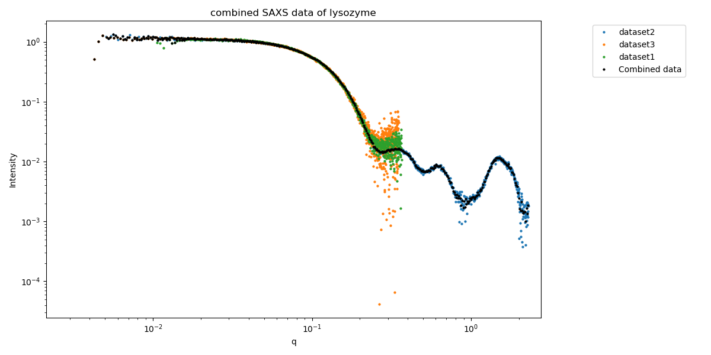
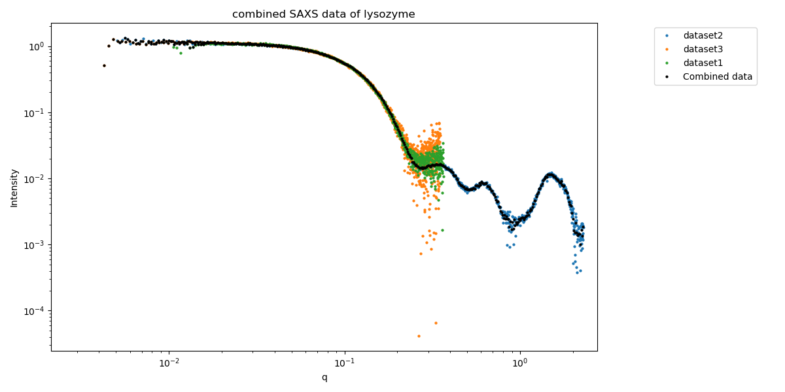

Home
ML-SAScombine

ML-SAScombine merges SAXS data measured from the same sample but at different beamlines. It applies maximum likelihood to do this.
Overview
- Batch version: GitHub
- Web application at GenApp
- Publication: Trewhella et al 2024

ML-SAScombine merges SAXS data measured from the same sample but at different beamlines. It applies maximum likelihood to do this.